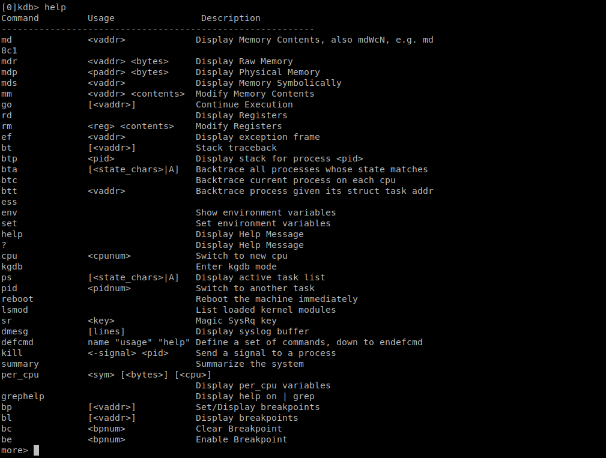

Debugging the Linux Kernel
This section discusses the steps to connect to the kernel debugger for debugging the kernel code. There are two ways of connecting to the kernel debugger: kdb and kgdb. The Linux Kernel has a debug core that is common to both kdb and kgdb.
KDB vs KGDB
kdb is a debugging tool that is not source code aware, but it provides a shell to perform kernel debugging, like dumping the kernel log buffer using dmesg (messages written by the kernel).
kgdb(gdb), on the other hand, is a source code-aware tool that lets us peek into the kernel data structures, like what we can do with gdb for user space applications (with some limitations). But there are limitations of using kgdb on a complex system like the kernel since the entire system is halted, and interrupts and other time-critical events are delayed if we try to single-step through each line of the kernel code. Typically, we use kdb for simple tasks like dumping all available debugging information and moving on to kgdb if required.
Some of the tasks that can be achieved with the kdb shell are:
-
Dump register or memory contents
-
Change memory content
-
Dump dmesg logs
-
List all processes
-
Backtrace any process
-
Dump the ftrace buffer(s)
Using KDB
To debug the Linux Kernel with the kdb shell, we need to compile the Linux Kernel with some flags enabled, which we explain in this section. After compilation, we boot the kernel in a qemu virtual machine and launch the kdb shell.
Compiling the Linux Kernel with debug flags
To debug the kernel using kdb we need to compile the kernel with following flags:. The mandatory configuration options for kdb are highlighted. The CONFIG_KGDB flag enables the Linux kernel debugger and the CONFIG_KGDB_KDB flag enables the kdb frontend to the kernel debugger. Other flags enable alternate ways of invoking the kdb shell.
-
CONFIG_KGDB=y
-
CONFIG_KGDB_KDB=y
-
CONFIG_FRAME_POINTER=y # For accurate stack back traces
-
CONFIG_KGDB_SERIAL_CONSOLE=y
-
CONFIG_KDB_KEYBOARD=y #Applicable for KDB only, with PS/2 style keyboard as input
-
CONFIG_MAGIC_SYSRQ=y # To enter kdb using MAGIC SYSRQ
-
CONFIG_MAGIC_SYSRQ_DEFAULT_ENABLE=0x1
-
CONFIG_MAGIC_SYSRQ_SERIAL=y
-
CONFIG_MAGIC_SYSRQ_SERIAL_SEQUENCE=""
|
To enable CONFIG_DEBUG_INFO go to To enable CONFIG_FRAME_POINTER go to To enable CONFIG_KGDB go to To search the exact location for any config option in make menuconfig, press |
Boot the Linux Kernel and invoking the kdb shell
Once the Linux Kernel is compiled with the required debug flags, boot the kernel in a qemu virtual machine as explained in Booting the Kernel directly in a Qemu Virtual Machine. As the root user invoke the following command:
echo ttyS0 > /sys/module/kgdboc/parameters/kgdbocThe above command may be executed from any terminal (ssh login terminal for example). But the kdb command will only work from ttyS0 which is the serial console. So, the next step is to log in to the serial console. use the following command to enter the console.
virsh console <vm-name>Press Enter to get the prompt. Login using root credentials. You may wait for a fault to happen or may enter kdb shell forcefully using the following command:
echo g > /proc/sysrq-trigger
Use the help command to list all commands available in the kdb shell.

In case you don’t get the kdb shell working, check the terminal using tty command. It should be same serial console as configured in kgdboc parameter.